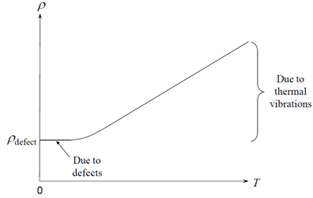
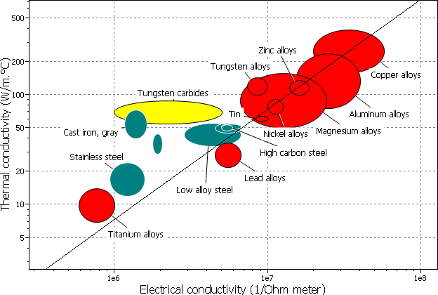
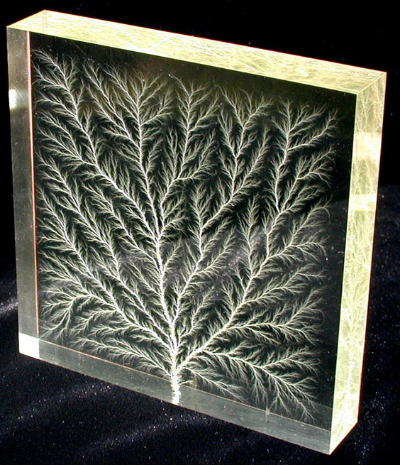
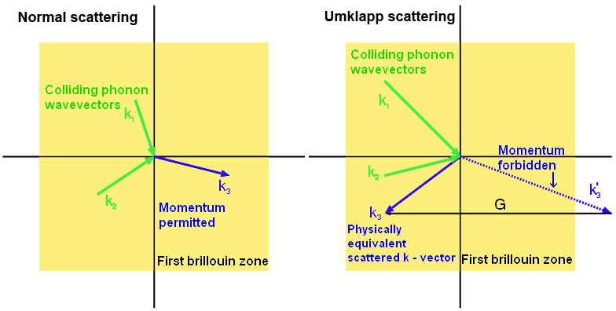
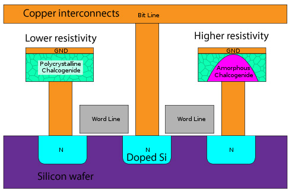
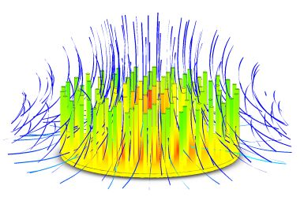
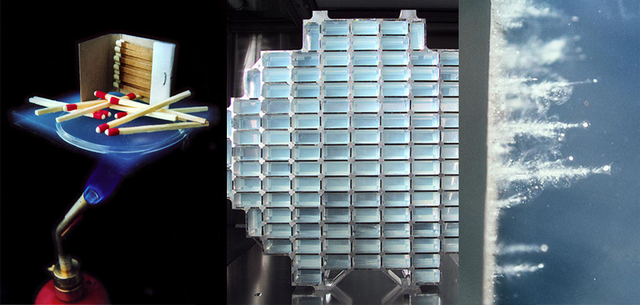

The original, as published: DoITPoMS, University of Cambridge, Introduction to thermal and electrical conductivity. CC BY-NC-SA 4.0, https://creativecommons.org/licenses/by-nc-sa/4.0/. As published, from https://www.doitpoms.ac.uk/tlplib/thermal_electrical/ https://www.doitpoms.ac.uk/tlplib/thermal_electrical/
Electrical conductivity spans an incredibly large order of magnitudes (30!) from insulators to metals, and can even be infinite in superconductors. Knowledge of how to control it has allowed for the computer revolution, and ever increasing miniaturisation
Thermal conductivity, while only spanning arround 10 orders of magnitude for known materials, is still crucial for many important technological advancements, from jet turbines and space travel to USB drinks coolers.
To truly appreciate these achievements, it is vital to have an understanding of how conductivity arises in materials. There are simple models that can be used to predict the behaviour of many materials; close parallels exist between thermal and electrical conduction in metals, whereas the conduction mechanisms in non-metals are quite different.
It is important to not get confused by conduction, conductivity, resistance, and resistivity.
The materials properties are electrical conductivity, σ , and electrical resistivity, ρ
The electrical conductivity of a material is defined as the amount of electric charge transferred per unit time across unit area under the action of a unit potential gradient: J = σ E
where J is the current density (current per unit area) and E is the potential gradient. This is another way of expressing Ohm’s law, which is more commonly stated as \( V = I R \).
For an isotropic material:
\[ \sigma = \frac 1 \rho \]
The units of electrical resistivity are the ohm metre (Ωm), and for conductivity, the inverse (Ω-1 m-1 ). For an actual sample of length l, and cross sectional area A, the resistance, R, is calculated by :
\[ R = \rho \frac l A \]
Electrical signals propagate at close to the speed of light, though this does not mean the electrons themselves move this quickly. Instead, the typical electron drift velocity (their average velocity) is much lower: less than 1 mm s-1. This is expanded upon in the Drude model section.
Another pertinent reminder is that of potential and current – current is the flow of electrons, and potential is the driving force that makes them flow. With sufficient potential, electrons may carry charge through any material, including a vacuum (see CRT), though they are powerless without any net current flow.
The best electrical conductors (apart from superconductors) are pure copper and pure silver, with resistivities of 16.78 and 15.87 nΩm respectively. For comparison, polystyrene has a resistivity of up to 1028 nΩm, 27 orders of magnitude different!
To understand thermal conductivity in materials, it is important to be familiar with the concept of heat transfer, which is the movement of thermal energy from a hotter to a colder body. It occurs in several circumstances:
The direction of heat transfer is set by the second law of thermodynamics, which states that the entropy of an isolated system which is not in thermal equilibrium will tend to increase over time, approaching a maximum value at equilibrium. This means heat transfer always occurs from a body at a higher temperature to a body at a lower temperature, and will continue until thermal equilibrium is reached.
A transfer of thermal energy occurs only through 3 modes: conduction, convection, and radiation. Each mode has a different mechanism and rate of heat transfer, and thus, in any particular situation, the rate of heat transfer depends on how much a certain mode is prevalent.
Conduction involves the transfer of thermal energy by a combination of diffusion of electrons and phonon vibrations – applicable to solids.
Convection involves the transfer of thermal energy in a moving medium – the hot gas/liquid moves through the cooler medium(normally due to density differences).
Radiation involves the transfer of thermal energy by electromagnetic radiation. The sun is a good example of energy transfer through a (near) vacuum.
This TLP focuses on conduction in crystalline solids.
Thermal conductivity, Κ, is the materials property that indicates the ability to conduct heat. Fourier’s first law gives the heat flux as proportional to the temperature difference, surface area, and length of the sample:
\[ H = \frac{\Delta Q}{\Delta t} = \kappa A\frac {\Delta T}{l}\]
where ΔQ / Δt is the rate of heat transfer, A is the surface area and l is the length.
The best metallic thermal conductors are pure copper and silver. At room temperature, commercially pure copper typically has a conductivity of about 360 Wm-1K-1 (although the thermal conductivity of a single crystal of copper was measured at 12,200 Wm-1K-1 at a temperature of 20.8 K). In metals, the movement of electrons dominates the conduction of heat.
The bulk material with the highest thermal conductivity (aside from the superfluid helium II) is, perhaps surprisingly, a non-metal: pure single crystal diamond, which has a thermal conductivity at room temperature of around 2200 Wm-1K-1. The high conductivity is even used to test the authenticity of a diamond. Strong covalent bonds within the molecule are responsible for the high conductivity even though there are no free electrons, heat is conducted by phonons. Most natural diamonds also contain boron atoms that replace carbon atoms in the crystal matrix, which also have high thermal conductance.
Due to the quantum mechanical nature of electrons, a full simulation of electron movement in a solid (i.e. conduction) would require consideration of not only all the positive ion cores interacting with each electron, but also each electron with every other electron. Even with advanced models, this rapidly becomes far too complicated to model adequately for a material of macroscopic scale.
The Drude model simplifies things considerably by using classical mechanics and treats the solid as a fixed array of nuclei in a ‘sea’ of unbound electrons. Additionally, the electrons move in straight lines, do not interact with each other, and are scattered randomly by nuclei.
Rather than model the whole lattice, two statistically derived numbers are used:
τ, the average time between collisions (the scattering time), and
l, the average distance traveled between collisions (the mean free path)
Under the application of a field, E, electrons experience a force –e E, and thus an acceleration from F = m a
For an electron emerging from a collision with velocity v0, the velocity after time t is given by:
\[v =v_{0} - \frac{eEt}{m} \]
Of course, if the electrons are scattered randomly by each collision, v0 will be zero. If we also consider the time t = τ, an equation for the drift velocity is given:
\[v =\frac{-eE\tau}{m} \]
For n free electrons per unit volume, the current density J is: J = -n e v
Substituting v for the drift velocity:
\[J = \frac {ne^{2}\tau E}{m} \]
The conductivity σ = n e μ, where μ is the mobility, which is defined as
\[ \mu = \frac{|v|}{E} = \frac{eE\tau}{mE} = \frac{e\tau}{m} \]
The net result of all this maths is a reasonable approximation of the conductivity of a number of monovalent metals. At room temperature, by using the kinetic theory of gases to estimate the drift velocity, the Drude model gives σ ~ 106 Ω-1 m-1. This is about the right order of magnitude for many monovalent metals, such as sodium (σ ~ 2.13 × 105 Ω-1 m-1).
The Drude model can be visualised using the following simulation. With no applied field, it can be seen that the electrons move around randomly. Use the slider to apply a field, to see its effect on the movement of the electrons.
However, it is important to note that for non-metals, multivalent metals, and semiconductors, the Drude model fails miserably. To be able to predict the conductivity of these materials more accurately, quantum mechanical models such as the Nearly Free Electron Model are required. These are beyond the scope of this TLP
Superconductors are also not explained by such simple models, though more information can be found at the Superconductivity TLP.
Electrical conduction in most metallic conductors (not semiconductors!) is straightforward to approximate. There are three important cases:
For pure metals at around room temperature, the resistivity depends linearly on temperature.
\[ \rho_2 = \rho_1 [1 + \alpha(T_2 - T_1)]\]
However, at low temperatures, the conductivity ceases to be linear (superconductors are dealt with separately), and resistivity is related to temperature by Matthiesen’s rule:
\[ \rho(T) = {\rho _{{\rm{defect}}}}+ {\rho _{{\rm{thermal}}}} \]

The low temperature resistivity ( \({\rho _{{\rm{defect}}}}\) )depends on the concentration of lattice defects, such as dislocations, grain boundaries, vacancies, and interstitial atoms. Consequently, it is lower in annealed, large crystal metal samples, and higher in alloys and work hardened metals. You might think that at higher temperatures the electrons would have more energy to be able to move through the material, so perhaps it is rather surprising that resistivity increases (and conductivity therefore decreases) as temperature increases. The reason for this is that as temperature increases, the electrons are scattered more frequently by lattice vibrations, or phonons, which causes the resistivity to increase. This contribution to the resistivity is described by ρthermal.
The temperature dependence of the conductivity of pure metals is illustrated schematically in the following simulation. Use the slider to vary the temperature, to see how the movement of the electrons through the lattice is affected. You can also introduce interstitial atoms by clicking within the lattice.
As before, adding an impurity (in this case another element) decreases the conductivity. For a solid solution, the variation of resistivity with composition is given by Nordheim’s rule:
\[ \rho = \chi_{\alpha}\rho_{\alpha} + \chi_{\beta}\rho_{\beta} + C\chi_{\alpha}\chi_{\beta} \]
where C is a constant and CA and CB are the atomic fractions of the metals A and B, whose resistivities are ρA and ρB respectively.
Further, the difference in valency between the bulk lattice and the impurity atoms is proportional to the difference in resistivity - Linde’s rule.
\[\Delta \rho \propto (\Delta Z)^2 \]
where ΔZ is the difference in valence between the solute and the solvent.
Thus, solute atoms with a higher (or lower) charge than the lattice will have a greater effect on the resistivity.
For an alloy where there are two or more distinct phases, the contributions simply contribute linearly to the total resistivity (though the effect of many grain boundaries increases resistivity slightly).
\[ \rho = \chi_\alpha\rho_\alpha + \chi_\beta\rho_\beta \]
The following animation illustrates Mattheisen’s rule, Nordheim’s rule and the mixture rule.
Metals typically have a relatively high concentration of free conduction electrons, and these can transfer heat as they move through the lattice. Phonon-based conduction also occurs, but the effect is swamped by that of electronic conduction.
The following simulation shows how electrons can conduct heat by colliding with the nuclei and transferring thermal energy. Click the “source” button to apply a heat source to one side of the sample. The graph will show the thermal gradient within the sample, and you can also apply a heat sink to the opposite side of the sample using the “sink” button.
Since the dominant method of conduction is the same in metals for thermal and electrical conduction (i.e. electrons!), it makes sense that there is a relationship between the two conductivities.
The Wiedemann-Franz law states that the ratio of thermal conductivity to the electrical conductivity of a metal is proportional to its temperature.
\[LT = \frac{\kappa }{\sigma }\]
Where L the proportionality constant (also known as the Lorenz number), is:
\[L = \frac{\kappa }{{\sigma T}} = 2.45 \times {10^{ - 8}}W\Omega {K^{ - 2}}\]
The law can be explained by the fact that free electrons in the metal are involved in the mechanisms in both heat and electrical transport. The thermal conductivity increases with the average electron velocity since this increases the forward transport of energy. However, the electrical conductivity decreases with an increase in particle velocity because the collisions divert the electrons from forward transport of charge.

Although the drude model works reasonably well for monovalent metals, it does not predict the properties of semiconductors, superconductors, or non-metallic conductors.
Superconductors and Semiconductors are best explained in their own TLPs.
For certain materials, there is no net movement of electrons, yet they still conduct electricity.
The mechanism is that of ionic conduction, whereby some charged ions can move through the bulk lattice (by the usual diffusion mechanisms, except with an electric field driving force).
Such ionic conductors are used in solid oxide fuel cells – though for the example of yttria stabilised zirconia (YZT), operational temperatures are between 500 and 1000 degrees C. Because they conduct by a diffusion like mechanism, higher temperatures lead to higher conductivity, the reverse of what the simple Drude model would predict.
There is an important, and potentially lethal mechanism by which an insulator can become conductive. In air, it may be commonly recognised as lightning. Of note is that the mechanism can ionise the ‘insulator’, leaving it temporarily more conductive..
Gases are commonly ionised in domestic lighting devices. The most common are fluorescent tubes and neon lights.
To initially excite the mercury vapour in a fluorescent tube type light, a voltage spike exceeding the breakdown voltage is needed. This can be noticed when switching such a light on as a sudden ignition, with an associated radio interference spike. A faulty tube may not fully ionise, leading to only a small glow at the ends.

Under high voltages, even plexiglass may conduct. The temporarily ionised path is opaque on cooling, giving a Lichtenberg figure in this case. Image “Lichtenberg figure” by Bert Hickman
More information is available in the Dielectrics TLP page on breakdown
As mentioned previously, metals have two modes of thermal conduction: electron based and phonon based. For non metals, there are relatively few free electrons, so the phonon method dominates.
Heat can be thought of as a measure of the energy in the vibrations of atoms in a material. As with all things on the atomic scale, there are quantum mechanical considerations; the energy of each vibration is quantised (and proportional to the frequency). A phonon is a quantum of vibrational energy, and by the combination (superposition) of many phonons, heat is observed macroscopically.
The energy of a given lattice vibration in a rigid crystal lattice is quantised into a quasiparticle called a phonon. This is analogous to a photon in an electromagnetic wave; thermal vibrations in crystals can be described as thermally excited phonons, which can be related to thermally excited photons. Phonons are a major factor governing the electrical and thermal conductivities of a material.
A phonon is a quantum mechanical adaptation of normal modal vibration in classical mechanics. A key property of phonons is that of wave-particle duality; normal modes have wave-like phenomena in classical mechanics but gain particle-like behaviour under quantum mechanics.
The energy of a phonon is proportional to its angular frequency ω:
\[\varepsilon = (n + \frac{1}{2})\hbar \omega \]
with quantum number n. The term \(\frac{1}{2}\hbar \omega \) is the zero point energy of the mode. This is defined as the lowest possible energy that the system possesses and is the energy of the ground state.
If a solid has more than one type of atom in the unit cell, there will be two possible types of phonons: “acoustic” and “optical” phonons. The frequency of acoustic phonons is around that of sound, and for optical phonons, close to that of infrared light. They are referred to as optical because in ionic crystals they are excited easily by electromagnetic radiation.
If a crystal lattice is at zero temperature, it lies in its ground state, and contains no phonons. When the lattice is heated to and held at a non-zero temperature, its energy is not constant, but fluctuates randomly about some mean value. These energy fluctuations are caused by random lattice vibrations, which can be viewed as a gas of phonons. Because the temperature of the lattice generates these phonons, they are sometimes referred to as thermal phonons. Thermal phonons can be created or destroyed by random energy fluctuations.
It is accepted that phonons also have momentum, and therefore can conduct energy through the lattice. Unlike electrons, there is a net movement of phonons - from the hotter to the cooler part of the lattice, where they are destroyed. Electrons must maintain charge neutrality in the lattice, so there is no net movement of electrons during thermal conduction.
The following simulation shows schematic optical and acoustic phonons in a 2D lattice, and has the option to animate a 2D wavevector defined by clicking inside the green box.
When two phonons collide, the resulting phonon has the vector sum of their momenta. The way of treating particles moving in a lattice quantum mechanically under the reduced zone scheme (which is beyond the scope of this TLP but is explored in more depth in the Brillouin Zones TLP), leads to a conceptually strange effect. If the momentum is too great (outside the first Brillouin zone) then the resulting phonon moves in almost the opposite direction. This is Umklapp scattering, and is dominant at higher temperatures- acting to reduce thermal conductivity as the temperature increases.

As electrical properties vary with microstructure, a type of computer memory called phase-change random-access memory (PC-RAM) has been developed. The material used is a chalcogenide reffered to as GST (Ge2Sb2Te5).
The amorphous state is semiconducting, while in a (poly)crystalline form it is metallic. Heating above the glass transition, but below the melting point, crystallises a previously semiconducting amorphous cell. Likewise, fully melting, then rapidly cooling a cell leaves it in the metallic crystalline state.
This variation of resistivity with microstructure is crucial to the operation of such devices. By varying the heating conditions, a varying proportion of each GST cell may be crystalline and amorphous - the mixture rule applies as it’s effectively two phases. This allows for multiple distinguishable levels of resistance per cell, increasing the storage density, and reducing the cost per megabyte.

The more common problem with silicon devices is dissipating heat.
A modern processor has a thermal design power of above 70w (Intel i7 3770, 22 nm process). A cooler must dissipate that specified amount of heat from the die’s surface, which is typically less than 10 cm2. It is common for heat sinks to have a copper block attached to the microprocessor casing by thermal paste, and pressure. The bulk of the heat sink is usually made from much cheaper aluminium, though the high thermal conductivity of copper is necessary for the interface. Thermal paste, whilst a better thermal conductor than air, is much worse than most metals, so it is only used as a thin layer to replace air gaps.

Conduction is not the most efficient method to carry heat to a separate heat sink, so convection and the latent heat of evaporation can be used. Heat pipes, typically made from copper are filled with a low boiling point liquid, which boils at the hot end, and condenses at the cool end of the pipe. This is a much faster way of transferring heat over longer distances.
There are many applications of thermal insulators, with development coming from attempts to improve bulk mechanical properties, while retaining insulating properties, (i.e. Don’t let heat through, but don’t melt)
A particularly famous application of thermal insulation is the (now retired) space shuttle tiles which are responsible for protecting the shuttle during re-entry into the atmosphere. They are such good insulators, that the outside may glow red-hot, while inside the shuttle the astronauts are still alive.
One of the best thermal insulators is silica aerogel.
An aerogel is an extremely low-density solid-state material made from a gel where the liquid phase of the gel has been replaced with gas. The result is an extremely low density solid, which makes it effective as a thermal insulator.
One use of aerogels is for a lightweight micrometeorite collector, aerogel was used. While extremely light, it is strong enough to capture micrometeors.

Matches stay cool millimetres from a blowtorch, a large array of aerogel bricks is ready to be launched into space, and the resulting space dust is photographed upon return to earth
Aerogels can be made from a variety of materials, but share a universal structure style. (amorphous, open-celled “nanofoams”). However, a common material used is silicate. Silica aerogels were first discovered in 1931.
Aerogels have extreme structures and extreme physical properties. The highly porous nature of an aerogel structure provides a low density. The percentage of open space within an aerogel structure is about 94% for a gel with a density of 100 kg m-3.
Aerogels are good thermal insulators because they eliminate the three methods of heat transfer (convection, conduction and radiation). They are good convective insulators due to the fact that air cannot circulate throughout the lattice. Silica aerogel is an especially good conductive insulator because silica is a poor conductor of heat - a metallic aerogel, on the other hand, would be a less effective insulator. Carbon aerogel is an effective radiative insulator because carbon is able to absorb the infrared radiation that transfers heat. Hence, for maximum thermal insulation, the best aerogel is silica doped with carbon.
One of the largest scale uses of electrical conductors is in power transmission.
Unfortunately, the properties that are desirable for a strong cable seem opposed to those for a good conductor.
Aluminium alloys can be very strong for their density, but following Nordheim’s rule, are much poorer conductors.
There are a huge variety of steels, but again, the interstitial carbon atoms increase the resistance compared to pure iron. This means that a larger diameter cable is needed, which, due to the density of steel, ends up being very heavy and expensive. Heavier cable also means we must construct additional pylons, which is a large component of the cost.
Copper, while appropriate for home wiring, is dense, and increasingly expensive.
For most overhead power cables, the solution is to use two materials – a steel core, surrounded by many individual aluminium cores. This achieves light, high strength, and acceptable conductivity cables.
Superconductors have been trialled for power transmission, though only underground, and at a considerably higher cost (and efficiency!).
The thermoelectric effect is the direct conversion of a difference in temperature into electric voltage and vice versa. Simply put, a thermoelectric device creates a voltage when there is a different temperature on each side of the device. It can also be run “backwards”, so when a voltage is applied across it, a temperature difference is created. This effect can be used to generate electricity, to measure temperature, to cool objects, or to heat them. Because the sign of the applied voltage determines the direction of heating and cooling, thermoelectric devices make very convenient temperature controllers.
The Peltier effect is that when a (direct) current flows through a metal-semiconductor junction, and heat is either absorbed or released. This is because the average energy of electrons in the two materials is different, and heat makes up this difference.
A fuller understanding requires knowledge of the band structure, explored further in the TLP on Semiconductors.
We have now gone over the foundation behind electrical and thermal conduction, as well as some of the more common applications. You should understand the role of electrons and phonons in thermal conduction, as well as how the interactions between them lead to changes in electrical conductivity with temperature. You should appreciate that metals have more heat transfer mechanisms than their non-metal counterparts, therefore explaining why they have higher thermal conductivity. Also, this TLP should have touched on some of the major applications of thermal and electrical conductors and insulators. Finally, the connections between thermal and electrical conductivity in metals have been made, including the Wiedemann-Franz Law.
To summarise the factors affecting conductivity: